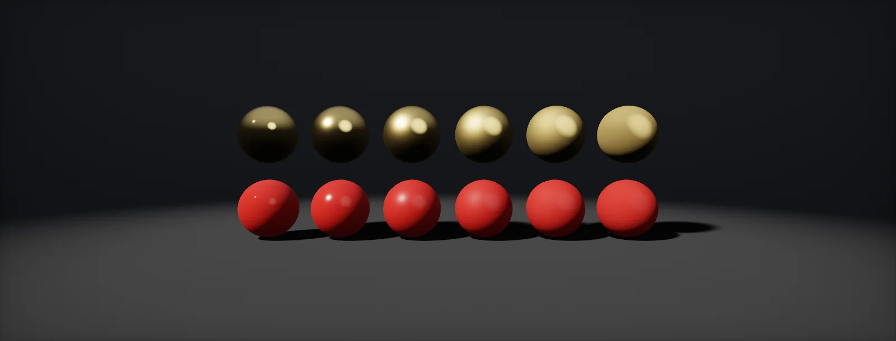

PBR BRDF
Every lit material in a modern engine runs the same few formulas: Lambert for diffuse, and GGX, Fresnel and a geometry term for specular. This unit builds them one at a time and shows what each slider in your material really changes.

Specular and diffuse split
Light that hits a surface does one of two things. Some of it bounces straight off the boundary, like a mirror: that is reflection, and it keeps the colour of the light. The rest enters the material, scatters around inside, and comes back out in all directions, tinted by the material: that is reflection. A PBR shader computes both and adds them.
Energy cannot be created: light that bounced off as specular is no longer available for diffuse. And metals absorb all light that enters them, so they have no diffuse at all. The share left for diffuse is:
The share that bounces, F, comes from the Fresnel term later in this unit. The rest of the unit builds each half from formulas you already know, starting with the easier one.
Lambert diffuse
The diffuse half is Lambert's law: the light arriving falls with the cosine of its angle, and a matte surface spreads what it reflects evenly over the half-sphere above it, which divides by π. That is the same formula as in lux to nits, written as a shader term:
The albedo / π part is the diffuse : the function that says how much of the light arriving from one direction leaves toward another. For Lambert it is the same for every direction, which is what "matte" means.
Microfacets and the half vector
A rough surface is modelled as countless tiny mirrors, , pointing in slightly different directions. A mirror reflects light from L toward the viewer V only if its normal lies exactly halfway between them (the law of reflection). That direction is the :
So the specular question becomes: what fraction of the microfacets points along H? A smooth surface has almost all of them aligned with N and shows a small, sharp highlight; a rough one spreads them out and shows a wide, dim one.
GGX distribution
The D gives that fraction. The standard one in games is GGX (also called Trowbridge–Reitz). Artists set roughness; the formula uses α = roughness², which makes the slider feel even:
GGX has a long tail: even far from the centre, a few facets still face H. That tail is the soft glow around highlights on real materials, and the reason GGX replaced older models. Animate the angle on a rough and a smooth setting: the area under both curves is the same, only its shape changes, because roughness redistributes reflection, it does not create or remove it.
Fresnel
The share of light that reflects at a surface depends on the material and the angle. Head-on it is F0. For a non-metal, F0 follows from its index of refraction n: F0 = ((n − 1)/(n + 1))², about 4 % for n = 1.5 (plastic, glass, stone, wood) and 2 % for water (n = 1.33). Toward grazing angles every material approaches 100 %. Schlick's approximation describes the rise with one power: F = F0 + (1 − F0)(1 − cos θ)⁵. Whatever does not reflect enters the surface: 1 − F is what refracts into glass and water, or scatters back out as diffuse light.
This is the one Fresnel term every chapter on glass, water, windows and coatings uses. Metals are different: their F0 is high and coloured, and the exact curve needs a complex IOR (Fresnel for metals). The metallic workflow stores F0 inside the base colour:
For metals the base colour is the reflection colour: gold reflects yellow, copper orange. For non-metals the base colour is the diffuse albedo and F0 stays at a fixed grey 0.04. Unreal's Specular input scales that: F0 = 0.08 · Specular, so the default 0.5 gives 0.04.
Geometry term (Smith)
On a rough surface some facets are hidden from the light by their neighbours (shadowing), or hidden from the viewer (masking). The G gives the fraction that is both lit and visible. It matters most at grazing angles and on rough surfaces, where it stops the edges of objects from glowing too brightly. The common Smith–Schlick form uses one factor per direction:
Unreal and many engines use k = (roughness + 1)² / 8 for direct light, which keeps very smooth surfaces from getting too dark at the edges. For environment lighting k = α / 2.
Complete BRDF
The specular BRDF multiplies the three terms and divides by 4 (N·L)(N·V), a correction for converting between microfacet and surface quantities (the Cook–Torrance model). Add the diffuse half and multiply by the light arriving:
float3 H = normalize(L + V); float NoL = saturate(dot(N, L)), NoV = saturate(dot(N, V)) + 1e-4, NoH = saturate(dot(N, H)), VoH = saturate(dot(V, H)); float a = roughness * roughness, a2 = a * a; float D = a2 / (PI * pow(NoH * NoH * (a2 - 1) + 1, 2)); float3 F0 = lerp(0.04, baseColor, metallic); float3 F = F0 + (1 - F0) * pow(1 - VoH, 5); float k = (roughness + 1) * (roughness + 1) / 8; float G = (NoL / (NoL * (1 - k) + k)) * (NoV / (NoV * (1 - k) + k)); float3 spec = D * F * G / (4 * NoL * NoV + 1e-4); float3 kd = (1 - F) * (1 - metallic); float3 color = (kd * baseColor / PI + spec) * lightColor * NoL;
This model describes solid surfaces. Characters replace parts of it: skin softens the diffuse term, hair shades along the strand instead of the normal, and cloth swaps the distribution for a sheen.
HDRP Lit uses this model. Its Smoothness is 1 − the roughness used in this unit (Unity calls that value perceptual roughness), so α = (1 − smoothness)². The mask map's alpha holds smoothness. A Specular Color workflow is available as an alternative to metallic.
URP Lit uses the same terms, slightly simplified for mobile (a combined visibility approximation). Smoothness again is 1 − perceptual roughness, stored in the metallic map's alpha or the albedo alpha.
The default lit shading model is this BRDF with Roughness as perceptual roughness, Metallic, Base Color and Specular (F0 = 0.08 · Specular for non-metals). The terms match Karis' 2013 notes in the sources.
Image-based lighting
Point lights come from one direction. The sky and the surroundings come from all directions at once, and integrating the BRDF over a whole environment per pixel is far too slow. Engines precompute it. The environment is stored in a cubemap whose mip levels are blurred by the GGX lobe of increasing roughness, so a rough surface simply samples a blurrier mip:
The second half of the "split sum" approximation is a small 2D lookup texture with the integral of F·G for every roughness and viewing angle: the result is prefiltered · (F0 · A + B), with A and B read from that texture. Diffuse environment light uses an even blurrier version, usually stored as spherical harmonics (Baked Light).
Build it in Unity HDRP
HDRP's Lit shader already implements this BRDF, so for normal materials you only fill in its inputs. To see each term working, this exercise rebuilds the whole BRDF in an Unlit graph, lit by a light direction from C#, with a cubemap for the environment. Written for Unity 6 with HDRP 17; Unity 2022 LTS works the same apart from a few renamed menu entries.
- How HDRP's inputs map to this unit: Smoothness s gives perceptual roughness 1 − s and α = (1 − s)²; Metallic blends F0 from 0.04 to the base colour; Specular Color mode sets F0 directly. For more lobes (clear coat, dual specular, iridescence) use the StackLit graph.
- Create the graph: in the Project window, Create > Shader Graph > HDRP > Unlit Shader Graph. Open it and check the Graph Inspector > Graph Settings.
- Add
SunToShader.csto the Directional Light (from Dot and Cross Product) and global Vector 3 / Color properties_SunDirectionand_SunColor(Exposed unticked). - Save
BRDF.hlsl. In the graph, add a Custom Function node. Set Type toFile, Source toBRDF.hlsland Name toPBRLight(without the_floatsuffix). Add the inputs BaseColor (Vector 3), Metallic (Float), Roughness (Float), Normal (Vector 3), ViewDir (Vector 3), LightDir (Vector 3), LightColor (Vector 3), Env (Cubemap), SS (SamplerState), EnvMips (Float), EnvIntensity (Float) and the outputs Color (Vector 3), in that order and with those types: they must match the function's parameters. - Normal: Normal Vector (World); ViewDir: View Direction (World, normalized). Env: a Cubemap property (any HDRI imported as a cube with mipmaps); EnvMips: its mip count (log₂ of its size + 1).
- Connect Color to Base Color. Put two spheres side by side, one with HDRP/Lit and one with this graph, and compare: they should match closely for the direct light.
#ifndef ATLAS_BRDF_INCLUDED
#define ATLAS_BRDF_INCLUDED
// Cook-Torrance with GGX, Schlick Fresnel and Smith-Schlick geometry, plus a cubemap for the environment.
// Roughness is perceptual roughness (1 - smoothness). All vectors in world space.
void PBRLight_float(float3 BaseColor, float Metallic, float Roughness,
float3 Normal, float3 ViewDir, float3 LightDir, float3 LightColor,
UnityTextureCube Env, UnitySamplerState SS, float EnvMips, float EnvIntensity,
out float3 Color)
{
float3 N = normalize(Normal), V = normalize(ViewDir), L = normalize(LightDir);
float3 H = normalize(L + V); // the half vector
float NoL = saturate(dot(N, L)), NoV = saturate(dot(N, V)) + 1e-4;
float NoH = saturate(dot(N, H)), VoH = saturate(dot(V, H));
float a = max(Roughness * Roughness, 0.002), a2 = a * a;
float dn = NoH * NoH * (a2 - 1.0) + 1.0;
float D = a2 / (PI * dn * dn); // GGX: how many facets face H
float3 F0 = lerp(float3(0.04, 0.04, 0.04), BaseColor, Metallic);
float3 F = F0 + (1.0 - F0) * pow(1.0 - VoH, 5.0); // Schlick Fresnel
float k = (Roughness + 1.0) * (Roughness + 1.0) / 8.0;
float G = (NoL / (NoL * (1.0 - k) + k)) * (NoV / (NoV * (1.0 - k) + k)); // Smith-Schlick
float3 spec = D * F * G / (4.0 * NoL * NoV + 1e-4);
float3 kd = (1.0 - F) * (1.0 - Metallic);
Color = (kd * BaseColor / PI + spec) * LightColor * NoL;
// environment: rougher surfaces read blurrier mips
float3 R = reflect(-V, N);
float mip = Roughness * (EnvMips - 1.0);
float3 env = SAMPLE_TEXTURECUBE_LOD(Env.tex, SS.samplerstate, R, mip).rgb;
float3 Fe = F0 + (max(1.0 - Roughness, F0) - F0) * pow(1.0 - NoV, 5.0);
Color += env * Fe * EnvIntensity;
Color += kd * BaseColor * SAMPLE_TEXTURECUBE_LOD(Env.tex, SS.samplerstate, N, EnvMips - 1.0).rgb * EnvIntensity; // rough diffuse ambient
}
#endifAn Unlit graph's output is not scaled by HDRP's exposure, so use a light colour around 1–5 rather than physical lux here. The last line, the blurriest mip sampled along the normal, is a cheap stand-in for proper irradiance (spherical harmonics). Amplify Shader Editor: paste the function body into a Custom Expression node (mode Call with the file included, or Create with the code inline); inputs and outputs map the same way.
URP Lit uses the same terms with a combined visibility approximation for mobile. In a custom URP graph, get the light from GetMainLight() and the environment from GlossyEnvironmentReflection(R, roughness, 1) instead of a cubemap input.
The default lit shading model is this BRDF; Specular 0.5 is F0 = 0.04. To write your own, use an Unlit material with a Custom node, or the Substrate framework in Unreal 5 for layered materials built from slabs.
Sources and further reading
The formulas and engine details in this unit come from these references. Engine documentation changes between versions.
- NotesReal Shading in Unreal Engine 4Brian Karis · SIGGRAPH 2013The exact D, F and G used here, the k remapping and the split-sum approximation.
- NotesPhysically Based Shading at DisneyBrent Burley · SIGGRAPH 2012Where roughness² and the metallic parameter come from.
- DocsFilament: Physically Based RenderingGoogleA complete, carefully explained real-time PBR implementation.
- TutorialPBR TheoryJoey de Vries · LearnOpenGLThe same model with code, followed by IBL chapters.
- TalkMoving Frostbite to Physically Based RenderingLagarde, de Rousiers · SIGGRAPH 2014Energy conservation, roughness mapping and image-based lighting in a game engine.